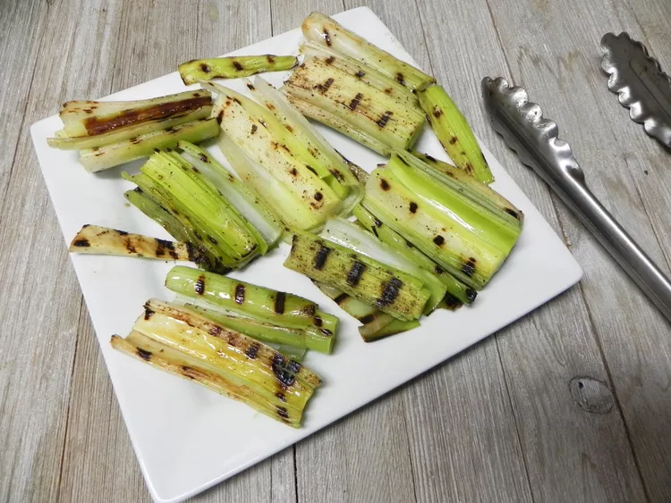

Grilled Leeks

Grilled leeks are simple to prepare, and their mildly sweet flavor complements just about anything else you can put on the grill.
Ingredients
- 2 large leeks, root ends and dark green tops removed
- 1 tablespoon olive oil
- salt and freshly ground black pepper to taste
- 2 tablespoons lemon juice
Steps
- Preheat an outdoor grill to medium-high heat and lightly oil the grate. Cut each leek into 4-inch sticks, then cut each stick in half lengthwise.
- Place leek sticks in a bowl. Pour olive oil on top. Season with salt and pepper. Gently toss to combine.
- Place leek sticks directly on the grill grate, cut side down. Cook until grill marks form, about 2 minutes.
- Using tongs, gently flip leeks over. Cook until grill marks form and leeks are beginning to soften, about 2 minutes. Splash lemon juice over the tops. Cook 1 minute more.